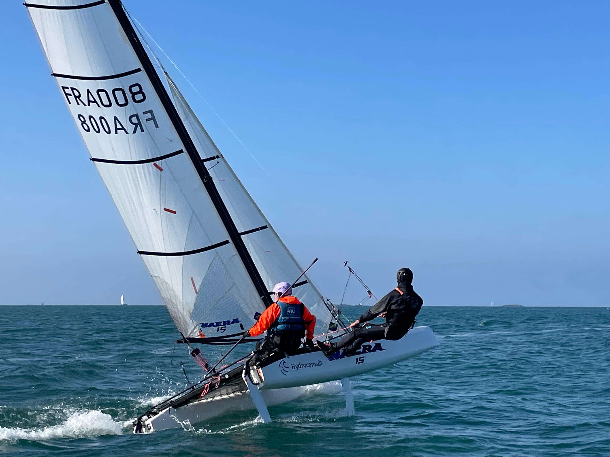
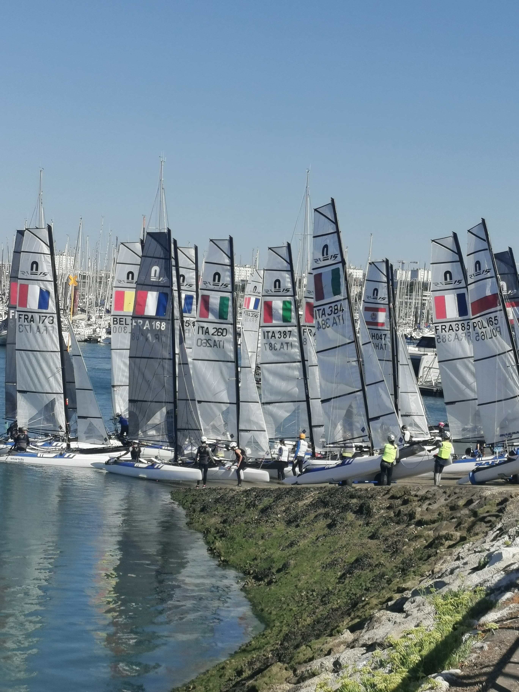
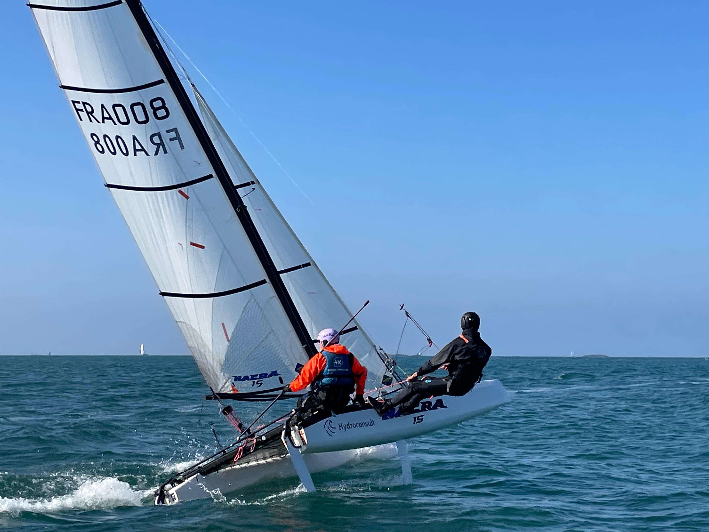
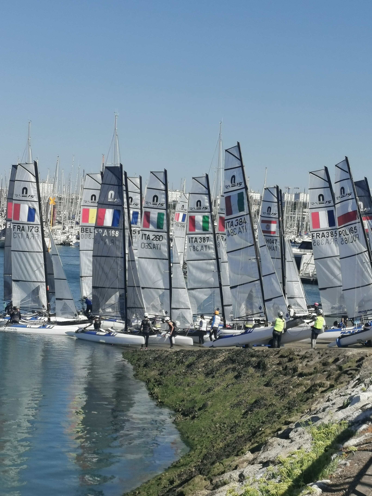

J'ai 19 ans et j'étudie en Licence 2 de Géographie Aménagement. Après 10 années de voile, j'ai entamé ma première saison en Nacra 15 en 2024 où nous avons participé aux nationaux et aux championnats du monde.

J'ai 16 ans, lycéen en filière technologique au lycée Les Rimains, je cumule 7 années d'experience dans le monde de la voile. Licencié à la SNBSM, j'ai pratiqué le Hobie Cat 15 et maintenant, le Nacra 15, avec déjà plusieurs traversées de la Manche à mon actif.

Navigation sportive en baie.
En plus des régates et des stages pendant les vacances, nous nous entraînons intensivement toute l'année deux fois par semaine. Nous naviguons avec deux autres Nacra 15 et nous sommes coachés par Julien Loyson à Saint-Lunaire.

Découvrir le Nacra 15.
Notre but est de faire découvrir le Nacra 15 aux jeunes en les emmenant sur notre bateau. En parallèle, nous organisons aussi des récoltes de fonds à travers la vente de calendriers, de tableaux et l'organisation de concerts.

Saison 2026.
S'entraîner dur et rechercher des financements pour participer aux championnats de France espoir, d'Europe et du Monde.
Notre objectif principal est de se qualifier aux championnats de France espoirs qui se dérouleront à Martigues en août 2026. Afin d'atteindre cet objectif, nous participerons à 4 régates qualificatives au printemps. (ligues à Quiberon et Lorient, l'eurocat à Carnac ainsi que la coupe de Bretagne des clubs à Lorient). La flotte bretonne comporte 20 bateaux, lors du championnat de France, on décomptera une flotte de 50 Nacra 15.
Les nationaux sont un excellent tremplin pour apprendre à naviguer dans des grandes flottes comme aux championnats internationaux et aux championnats de France. Lors des nationaux, les pays limitrophes de la France viennent pour se tester. Nous allons participer à L'european Superseries au Havre mi-mai et à l'Eurocat de Carnac début mai qui est aussi qualificatif aux championnats de France espoirs. Nous considérons ces régates comme un moyen de s'entraîner à naviguer dans des grandes flottes notamment sur les départs. Les flottent comportent en général entre 40 et 70 Nacra 15.
Cette année les championnats d'Europe et du Monde se déroulent respectivement à Barcelone en octobre 2026 et à Plymouth cet été. Nous projetons d'y aller non seulement pour découvrir le circuit international mais aussi pour performer et atteindre le rond or (la première moitié de classement), ou un podium sur le rond argent. Ce sont les régates qui sont les plus coûteuses pour les inscriptions et déplacements. En 2026, il se pourrait que la flotte Nacra 15 sur ces régates dépasse les 100 Nacra 15.

 




Article sur nos jeunes navigateurs et leur participation aux régates.
Voir l’articleEn soutenant l’Association Nacra en Baie de Saint-Malo, vous contribuez directement au développement d’un projet sportif ambitieux.
❤️ Faire un don via HelloAsso